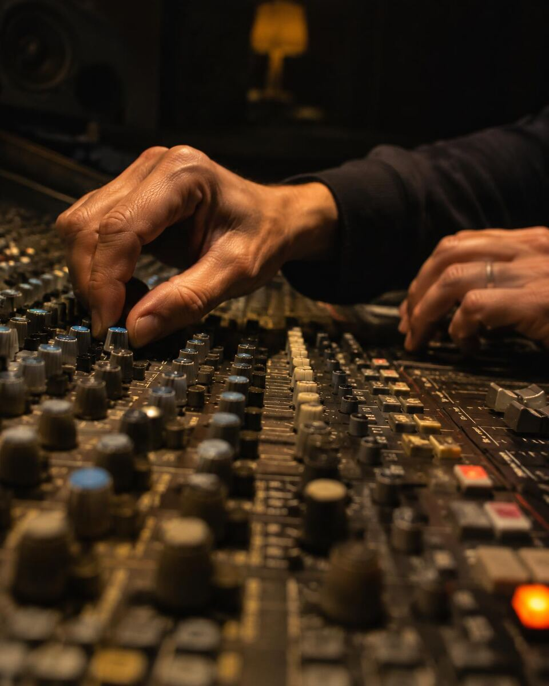
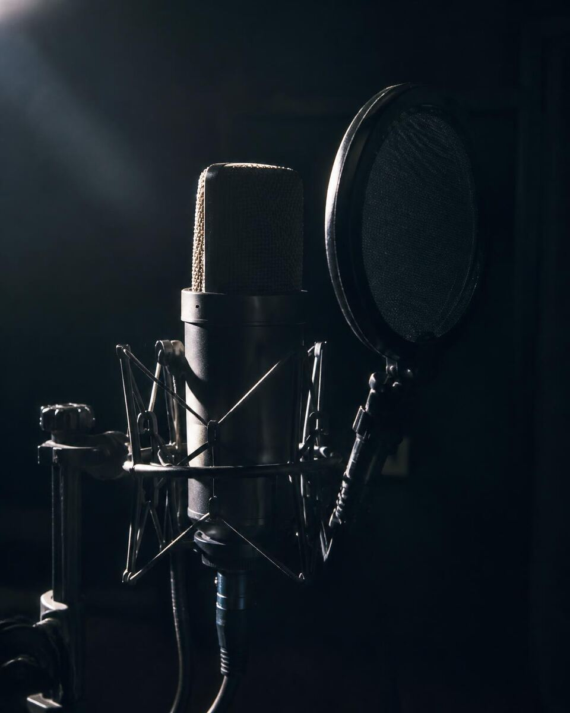

Music · Composition · Audio Production
The Art and Craft
of Audio Production.
For over 18 years, Wave has been involved in the creation, production, and refinement of sound across music, film, broadcasting, television, advertising, and commercial projects.
18+ yearsIn production
MusicComposition
BroadcastCommercial audio
Mix · MasterEngineering
01 — Experience
Experience That Goes Beyond the Equipment.
Over more than eighteen years, Wave has worked across a broad range of creative, commercial, and broadcast audio requirements.
From musical conception and composition to production, mixing, mastering, and final delivery, the work has demanded a combination of critical listening, technical understanding, creative judgement, and practical experience.
The tools may change. The objective remains the same: to bring the intended sound to its fullest potential.
02 — Capabilities
From Creative Conception to Finished Production.
- 01
Music Production & Composition
Music creation, composition, arrangement, and production for songs, film-related projects, and other creative requirements.
- 02
Commercial & Broadcast Audio
Production of radio commercials, jingles, advertising audio, and broadcast deliverables for radio, television, and commercial projects.
- 03
Mixing & Mastering
Refinement of recorded and produced audio through critical listening, tonal balance, dynamic control, and considered processing.
- 04
Sound Engineering
Recording, editing, processing, mixing, and the technical disciplines involved in assembling professional audio productions.
- 05
Studio & Audio System Integration
Studio configuration, monitoring systems, speaker placement, equipment integration, and practical audio setup.

03 — Philosophy
The Difference Is in the Listening.
Audio production is an interplay of creative intention, technical execution, and critical judgement.
The tools employed are only part of the process. Understanding the material, recognising what needs attention, and making decisions that serve the intended result are equally important.
Across composition, production, mixing, mastering, and sound engineering, every stage contributes to the integrity of the finished work.
04 — Heritage
Built Through Years of Real Work.
Wave's experience has developed through more than eighteen years of hands-on production, professional collaboration, broadcast requirements, and the practical challenges of delivering audio across different formats.
The work has included music production and composition, film-song projects, commercial mastering, radio advertising, jingles, television-related audio, and a broad range of studio and engineering requirements.
Wave's history has been shaped by the collective effort of people working together under one professional identity, with a shared responsibility for completing the work.

Enquiries
Have an Audio Project in Mind?
For audio production, composition, mixing, mastering, broadcast audio, and sound-engineering enquiries, contact Wave Audio to discuss your requirements.
Contact Wave Audio